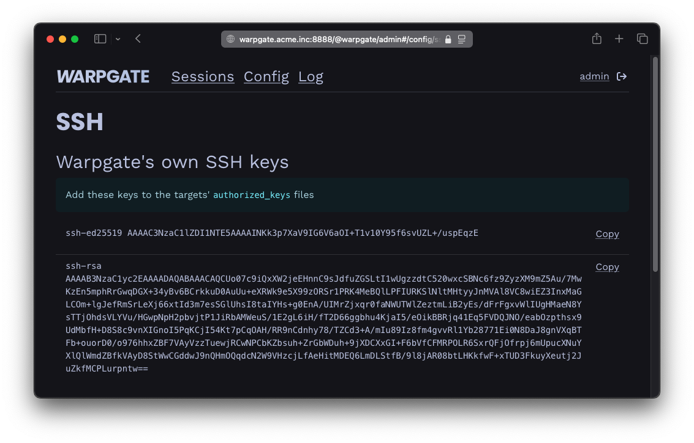
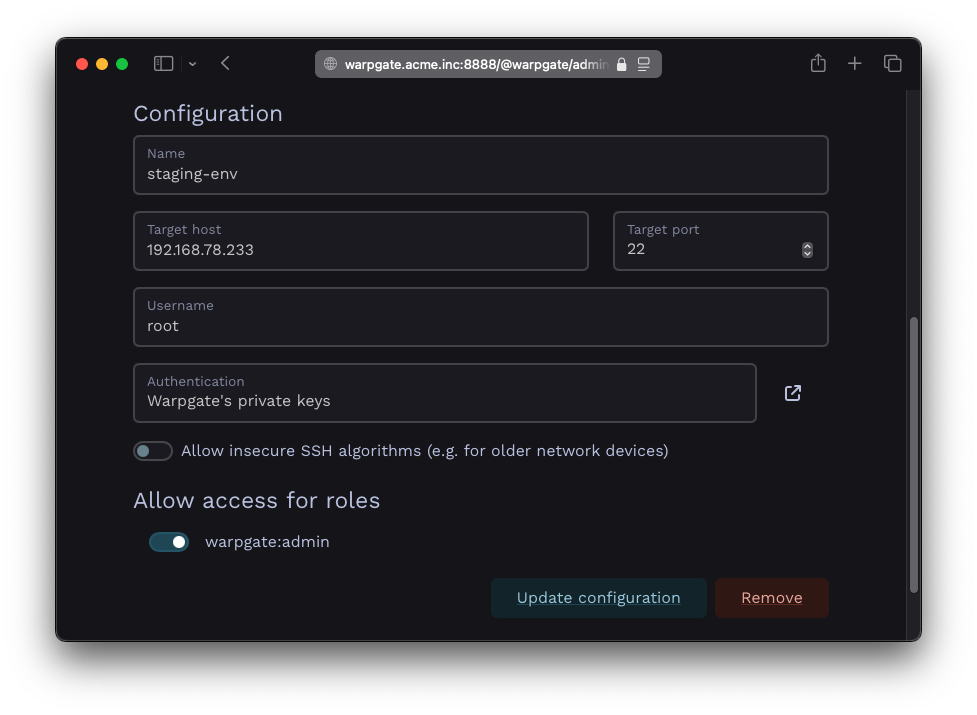
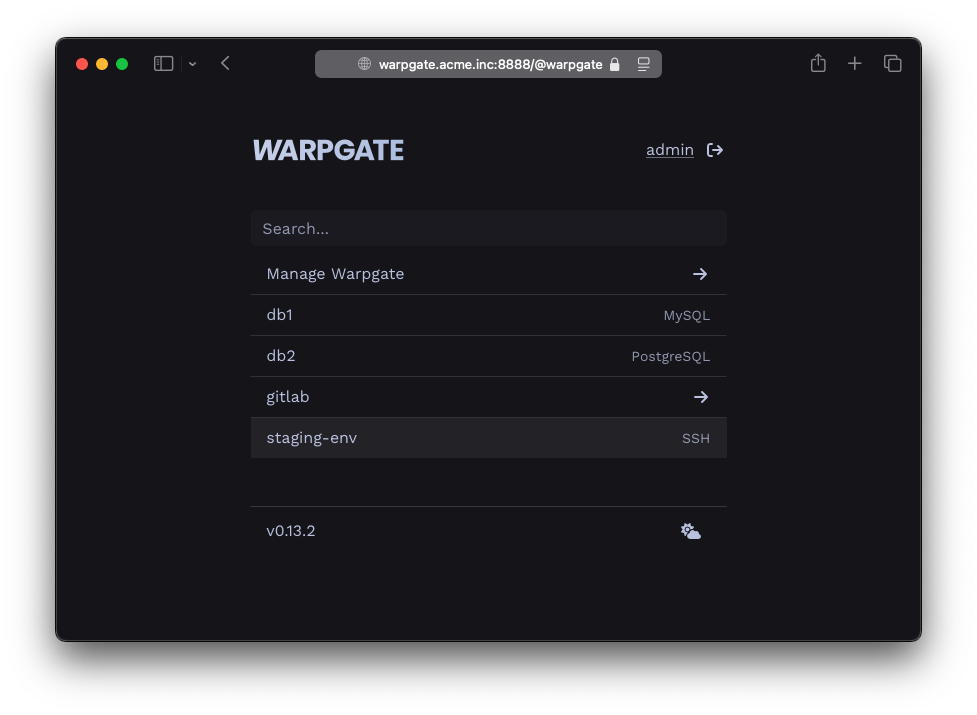
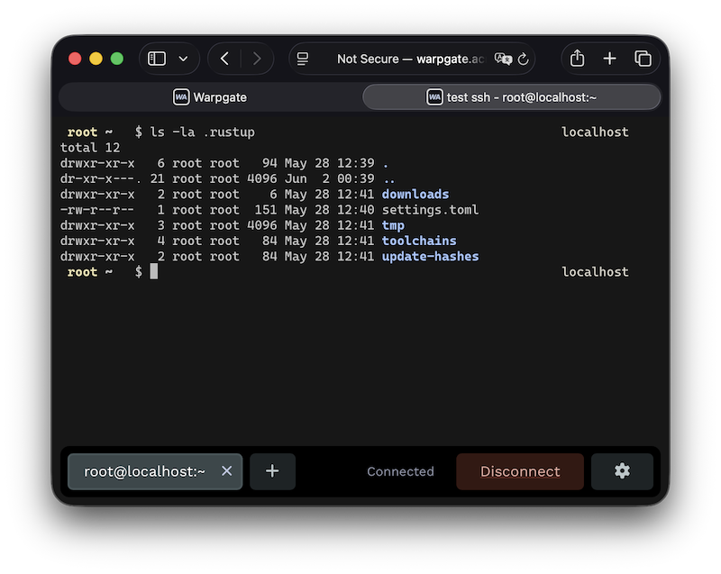
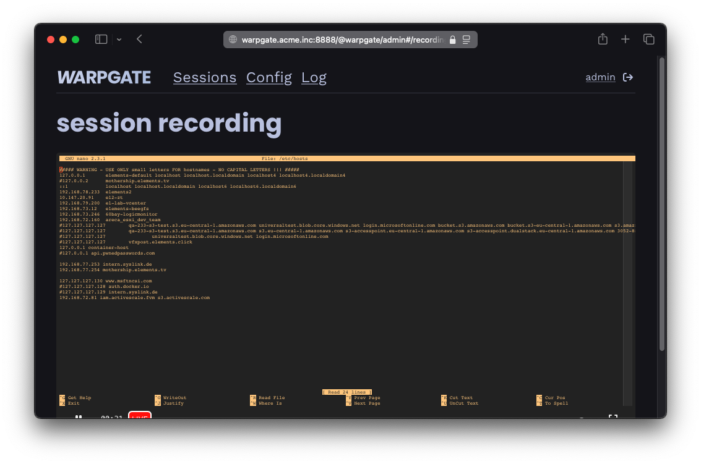

Adding SSH targets§
Authentication setup§
Preferred: public-key auth§
Warpgate has its own set of SSH keys which the target host must trust in order for connections to work.
The keys are stored in Warpgate's database and shared across all nodes of a cluster, so you never need to copy them between nodes by hand. On a fresh install Warpgate generates an Ed25519 and an RSA key automatically. Any keys found in the legacy on-disk location are imported into the database once, on first startup.
Manage the keys on the Config -> SSH keys page of the Admin UI:

Warpgate's public keys
- Generate a new Ed25519 or RSA key,
- Import an existing private key (OpenSSH or PKCS#8 PEM format, without a passphrase),
- rename a key,
- mark one or more keys as default,
- delete any key, except the last remaining one.
Default keys are the ones offered to a target that doesn't select a specific key (see Choosing a key per target below).
You can also list the public keys with the warpgate client-keys CLI command:
$ warpgate client-keys
13:59:41 INFO Using config: "/etc/warpgate.yaml" (users: 1, targets: 2, roles: 1)
Warpgate SSH client keys:
(add these to your target's authorized_keys file)
ssh-ed25519 AAAAC3NzaC1lZDI1NTE[...]aM+3RBsT5 client-ed25519 (default)
rsa-sha2-256 AAAADHJzYS[...] client-rsa (default)
Copy one of them and paste it at the end of the ~/.ssh/authorized_keys file on the target host (each target host OS user has their own authorized_keys file and you will need to create it if it doesn't exist yet).
Choosing a key per target§
An SSH target using public-key authentication is offered every default key by default. When editing the target, you can instead pick a specific key from the drop-down — useful when a host trusts only one particular key. If that key is later deleted, the target falls back to the default keys.
Alternative: password authentication§
Although not recommended, you can use a password to authenticate against a target instead.
Alternative: AWS EC2 Instance Connect§
If Warpgate runs on an EC2 instance, it can authenticate to EC2 SSH targets using EC2 Instance Connect — no key or password is stored on the target. Select IAM Role as the target's authentication method (this option only appears when Warpgate detects it is running on EC2).
When a user connects, Warpgate looks up the EC2 instance by its IP address, pushes its managed public key to the instance via EC2 Instance Connect, and authenticates with it. The target username is used as the instance OS user (e.g. ec2-user).
Warpgate's IAM role needs ec2:DescribeRegions, ec2:DescribeInstances and ec2-instance-connect:SendSSHPublicKey.
Connection setup§
Log into the Warpgate admin UI and navigate to Config > Targets > Add target and give the new target a name:

Adding an SSH target
Fill out the connection and authentication info and click Update configuration, for example:

SSH target configuration
The target should show up on the Warpgate homepage for users that are allowed to access it:

SSH target on the start page
Users will be able to click the entry to connect to it directly via a web-based terminal (v0.24+) and/or obtain connection instructions for their own SSH client:

Web-based SSH terminal

SSH connection instructions
The web-based terminal can be turned off globally (v0.26+) under Config > Global parameters > Web SSH, leaving users with connection instructions only.
Client setup§
Now, fire up your favorite SSH client and try connecting to Warpgate:
- Host: the Warpgate host
- Port: the Warpgate SSH port (default: 2222)
- Username:
admin:<target-name>, in this example:admin:vm1 - Password: your Warpgate admin password
When connecting for the first time, Warpgate will ask you to check and confirm the target host's SSH host key fingerprint (which you really should do).
Here's what it looks like with OpenSSH:
$ ssh c.wilde:staging-env@warpgate.acme.inc
c.wilde:staging-env@warpgate.acme.inc's password:
Warpgate Selected target: staging-env
Warpgate Host key (ssh-ed25519): AAAAC3[...]
Warpgate There is no trusted ssh-ed25519 key for this host.
Warpgate Trust this key? (y/n)
✓ Warpgate connected
root ~ $
From this point on, you can use this as a normal SSH connection, including SFTP etc.
While your SSH session is running, you'll be able to see its status in the Admin UI:

SSH session log
Click the shell session entry in the Recordings section for a live view and replay of the terminal session:

SSH session recording
Shell command auditing§
For interactive shell sessions, Warpgate will try to record the commands a user types as separate log entries for auditing. Detected commands appear tagged with Shell command entries in the session log.
This is a heuristic audit aid, not a security boundary: it is impossible to prevent a user from purposedly obscuring their inputs in an unlimited shell.
Connecting to legacy servers§
By default Warpgate only offers modern, secure key-exchange and encryption algorithms. To reach an older device that only supports legacy algorithms (DH groups 1/14, 3DES, HMAC-SHA1 or RSA-SHA1), enable Allow insecure algorithms.